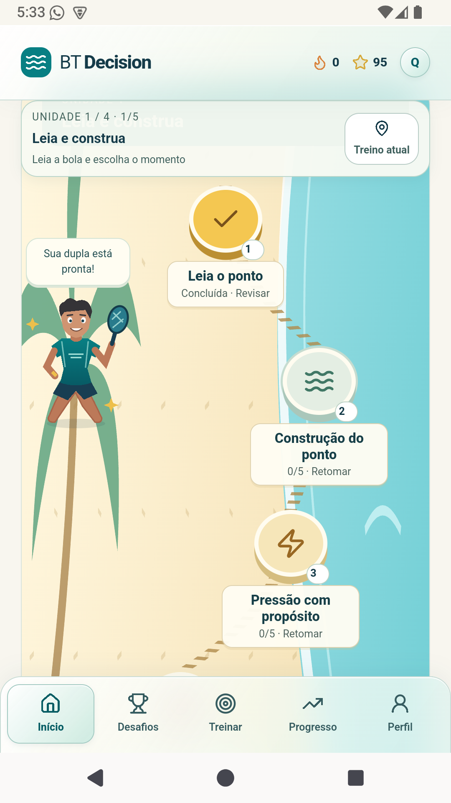
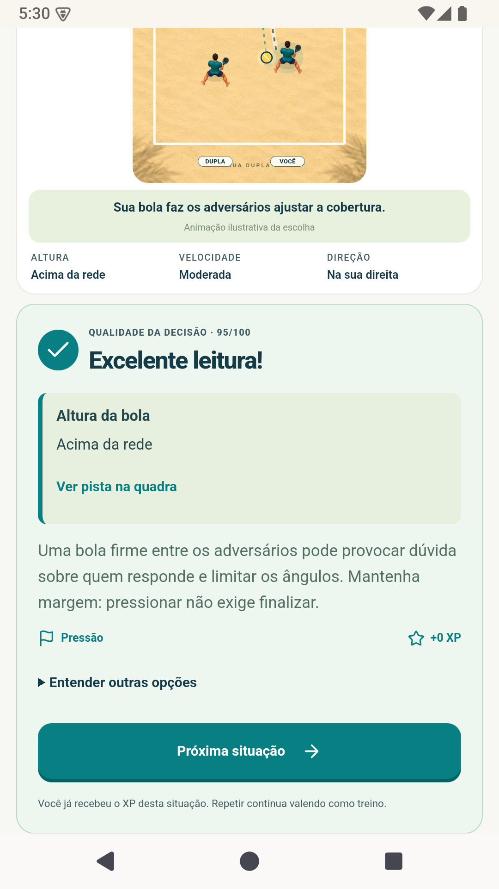

Leia a situação
Observe a bola, o posicionamento da dupla e os espaços da quadra.
A bola chega. Você trabalha o ponto, pressiona ou tenta finalizar? Treine essa escolha antes de entrar na quadra.
Conheça seu próximo treinoEm preparação para lançamento no Google Play.

Observe a bola, o posicionamento da dupla e os espaços da quadra.
Decida como construir, pressionar, finalizar ou recuperar o ponto.
Receba uma explicação e retome situações que merecem mais prática.
Na versão Android preparada para a loja, os treinos funcionam offline. Perfil e progresso ficam neste aparelho. A trilha avança por etapas, com revisão e reforço personalizado.
Os cenários são demonstrativos: o app complementa a aprendizagem e não avalia a execução técnica em quadra.

O BT Decision ainda não está disponível no Google Play. Quando a publicação for aprovada, o link oficial de instalação será colocado aqui.
Para informações sobre os testes, fale com o responsável pelo projeto.
Quero saber sobre os testesResponsável pelo projeto: Romário Brito.
Saiba o que fica no aparelho e como excluir seu progresso.
Ler a política de privacidade →